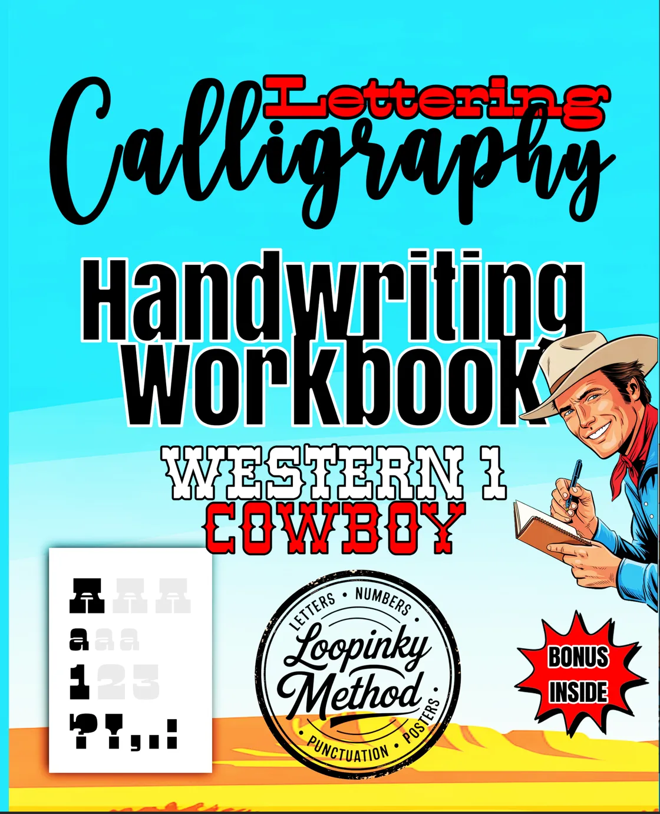
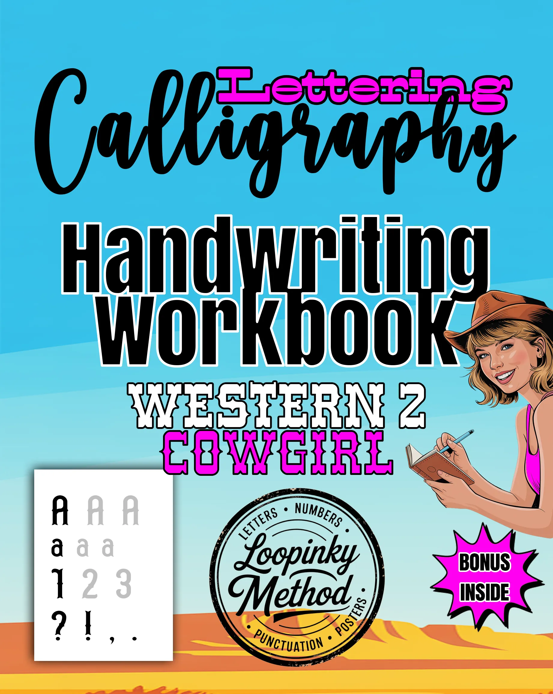
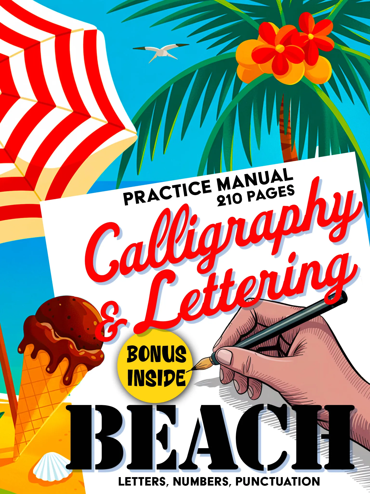

There's a reason Western lettering never goes out of style. From the weathered wood of frontier saloon signs to the bold proclamations of WANTED posters, Western typography carries a visual weight and cultural richness that few other lettering traditions can match. It speaks of wide-open spaces, dusty trails, and a time when every painted sign was a work of craftsmanship. Today, Western cowboy lettering is experiencing a creative renaissance, and for calligraphy enthusiasts looking for something truly distinctive, it offers one of the most rewarding styles to learn and practice.
A Brief History of Western Typography
Western lettering emerged in the American frontier of the 19th century, born from practical necessity and artistic ambition. Towns needed signs. Saloons needed names over their doors. Sheriffs needed wanted posters. And traveling shows needed bold, eye-catching advertisements that could be read from a distance.
The sign painters and printers of the frontier era developed a distinctive typographic vocabulary to meet these needs. They drew on several traditions: the heavy slab serifs of wood-type printing, the ornamental flourishes of Victorian-era display fonts, and the hand-painted lettering styles that evolved in isolation across remote Western communities. The result was a family of letterforms that combined boldness with decorative detail, readability with personality.
Think of the classic WANTED poster. Its letterforms are unmistakable: heavy, authoritative, with strong serifs and generous spacing. Or picture a saloon sign with its ornate, shadowed letters suggesting both elegance and frontier roughness. These are not neutral typefaces. They carry the story of a place and a time in every stroke.
Rodeo posters added another dimension to Western lettering. They required letterforms that conveyed energy and excitement while maintaining the rugged character of frontier design. The slanted, action-oriented lettering styles of rodeo advertising influenced an entire sub-genre of Western typography that remains popular today.
What Defines Western Cowboy Lettering
Western lettering is instantly recognizable, but what exactly makes it "Western"? Several characteristics set it apart from other lettering traditions:
- Slab serifs and heavy strokes: most Western letterforms feature thick, prominent serifs and substantial stroke widths that give them visual authority
- Decorative details: shadow effects, inline patterns, and ornamental additions are common, reflecting the frontier era's love of visual richness
- Rustic texture: Western letters often incorporate a sense of hand-made imperfection, as though carved from wood or painted on rough surfaces
- Strong vertical emphasis: tall, proud letterforms that stand upright like fence posts against a prairie sky
- Mixed influences: the best Western lettering blends structural strength with unexpected elegance, creating a style that is both rugged and refined
This combination of boldness and craft makes Western lettering uniquely satisfying to practice. Each letter feels substantial. Each stroke carries weight. And the decorative elements provide creative challenges that keep the practice engaging over time.
Loopinky Western Cowboy: Five Frontier Styles
Loopinky's Western Cowboy workbook captures the full range of frontier lettering in five distinct styles across 108 pages. Each style draws from a different aspect of Western typographic history, giving you a comprehensive tour of cowboy lettering from rugged and bold to surprisingly elegant.

Calligraphy & Lettering: Western Cowboy
5 unique Western lettering styles across 108 pages. Full alphabets, numbers & punctuation.
Buy on Amazon - $9.99What makes this workbook special is how it captures the diversity within Western lettering. The five styles range from heavy, poster-inspired block letters to more refined, ornamental scripts. Some demand bold, confident strokes. Others require careful attention to decorative detail. Together, they build a complete understanding of what Western lettering is and what it can become in your hands.
The 108-page format provides enough practice space to genuinely learn each style, not just sample it. With full alphabets, numbers, and punctuation for each of the five styles, you build the skills to create complete Western-themed lettering compositions from scratch.
Western Cowgirl: Frontier Elegance
For those drawn to the more elegant side of Western aesthetics, Loopinky's Western Cowgirl workbook offers five cursive styles that channel the feminine grace of frontier life. Where the Cowboy workbook emphasizes bold structure, the Cowgirl workbook focuses on flowing, decorative scripts that bring a different kind of beauty to Western lettering.

Cursive: Western Cowgirl
5 elegant Western lettering styles, full alphabets, numbers & punctuation.
Buy on Amazon - $9.99The Cowboy and Cowgirl workbooks are natural companions. Practicing both gives you access to the full spectrum of Western lettering, from its most rugged expressions to its most refined. Many Loopinky users work through both books to develop a versatile Western lettering skill set that they can apply to everything from personalized gifts to home decor projects.
Pairing Western Lettering with Other Styles
One of the most exciting aspects of learning Western cowboy lettering is discovering how it pairs with other calligraphy styles. The bold, structured nature of Western letterforms creates a striking contrast when combined with fluid, organic scripts like those in Loopinky's Beach Premium collection.

Calligraphy & Lettering: Beach Premium
Premium 210-page calligraphy manual. Fluid scripts, decorative elements and creative layouts.
Buy on Amazon - $14.99Imagine a composition where a bold Western headline sits above a flowing coastal-inspired body text. The contrast between the two styles creates visual tension and interest that neither style could achieve alone. This kind of style-mixing is a hallmark of advanced lettering artists, and building proficiency in both Western and fluid styles gives you a creative toolkit that few calligraphers possess.
Why Western Lettering Endures
Western typography has survived and thrived for over 150 years because it taps into something fundamental about visual communication. Its bold, clear letterforms demand attention. Its decorative elements reward close examination. And its cultural associations with independence, adventure, and craftsmanship give it an emotional resonance that transcends trends.
In an age of digital fonts and automated design, there's something deeply satisfying about forming Western letterforms by hand. You connect with the tradition of frontier sign painters who created every letter from scratch, adapting their styles to the surface, the message, and the audience. When you practice Western cowboy lettering, you're not just learning a style. You're participating in one of the richest traditions in American visual culture.
Western lettering is where rugged meets refined. Every stroke carries the weight of frontier history and the freedom of wide-open creative possibility.
Ready to saddle up and explore frontier lettering? Browse the full Loopinky Western collection and bring the spirit of the American West to your creative practice.